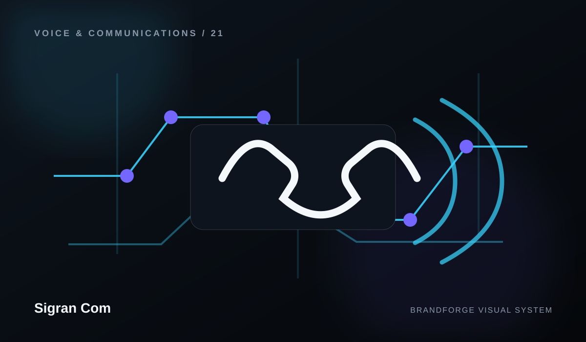

Direction
Define what voice platform needs to accomplish and how it fits the wider Sigran Com system.
Sigran Com
Voice Platform is treated as part of the complete Sigran Com experience — designed to simplify the system while keeping the experience clear, useful, and maintainable.

CAPABILITY 01
Sigran Com approaches voice platform as a connected part of the wider brand and operating experience. The goal is clarity first: explain what matters, organize it well, and create a structure that can grow.
BrandForge intentionally avoids publishing invented pricing, customer results, certifications, addresses, availability, performance guarantees, or project claims. Real facts can be added once they are verified.
Define what voice platform needs to accomplish and how it fits the wider Sigran Com system.
Turn the direction into understandable pages, workflows, information, or components that are easy to navigate.
Build the experience with consistent visual language, accessible interaction, and maintainable structure.
Create room for real content, integrations, product data, or operational detail to be added later without redesigning everything.